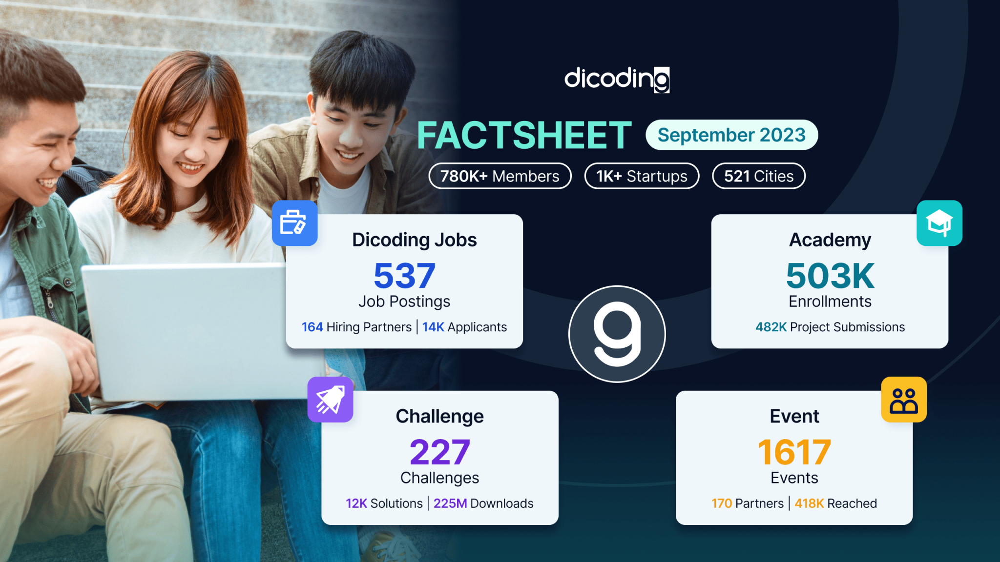
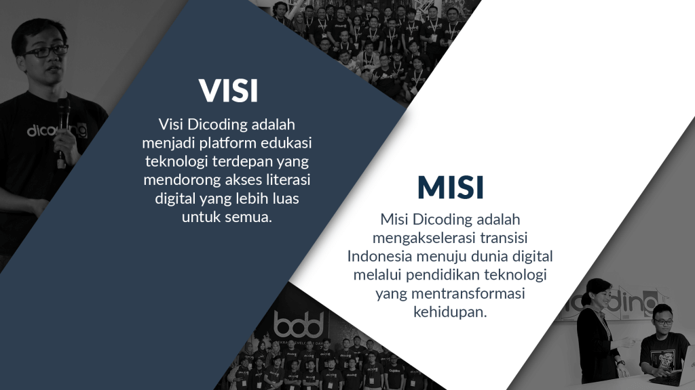

Story of Dicoding

Dicoding secara resmi diluncurkan tanggal 5 Januari 2015 untuk menjembatani developer Indonesia dengan
kebutuhan dan permintaan pasar yang semakin kompetitif. Melalui keempat pilar: academy, challenge, event,
dan Jobs, Dicoding giat mewujudkan misi menumbuhkembangkan ekosistem industri IT di Indonesia dengan mengasah
talenta terbaik yang menghasilkan produk teknologi unggul serta mampu bersaing di pasar lokal maupun global.
Pada pertengahan tahun ketujuhnya, Dicoding telah berhasil memikat lebih dari 780,000 developer IT dari 521
kota di seluruh Indonesia. Di antara jumlah tersebut, sebanyak lebih dari 1.000 merupakan startup members yang
memanfaatkan program-program Dicoding untuk memotivasi, mendukung, dan meningkatkan kualitas karya digital
startup-nya.
Dicoding mencatat ratusan ribu pengembang aplikasi lintas platform telah mendaftar untuk mengikuti 1617 offline
dan online events. Kegiatan ini diselenggarakan oleh Dicoding dengan berkolaborasi bersama komunitas developer,
pemerintah Indonesia, dan industri IT selama 2015-2023. Semangat dan kerja keras para developer untuk
mempersembahkan karya terbaik mereka terangkum dalam lebih dari 12.000 karya digital yang lahir dari 227 tantangan
pada platform challenge dicoding. Karya digital tersebut meliputi game, aplikasi mobile, chatbot, dan web dengan
jumlah unduhan yang mencapai lebih dari 225 juta kali. Prestasi ini menunjukkan keunggulan kualitas developer
Indonesia yang berdaya saing tinggi.
Visi Misi

Visi Dicoding adalah menjadi platform edukasi teknologi terdepan yang mendorong akses literasi digital yang
lebih luas untuk semua. Dicoding memiliki misi untuk mengakselerasi transisi Indonesia menuju dunia digital
melalui pendidikan teknologi yang mentransformasi kehidupan. Kini semua bangsa bergerak menuju dunia digital
yang bertumpu pada inovasi teknologi di semua sendi kehidupan. Kami yakin pendidikan teknologi adalah fondasi
bagi setiap bangsa agar menjadi yang terdepan dalam menghadapi dunia digital. Dicoding hadir sebagai platform
pendidikan teknologi yang membantu menghasilkan talenta digital berstandar global. Semua demi mengakselerasi
Indonesia agar menjadi yang terdepan.
Dicoding adalah platform yang menjembatani para developer tanah air dengan peluang pasar global melalui
keempat pilar: academy, challenge, event dan jobs. Dicoding mengapresiasi setiap tahap keberhasilan
dalam perjalanan seorang developer dengan penghargaan berupa Dicoding Points yang dapat ditukar dengan
rewards di platform kami. Ini memberi kesempatan kepada setiap developer untuk belajar dan meraih apa yang
dibutuhkannya untuk membuat karya yang lebih baik. Berkolaborasi dengan para mitra perusahaan IT dunia,
Dicoding menawarkan kurikulum terdepan dalam bidang pemrograman IT. Semua demi memastikan lulusan Dicoding
Academy adalah developer andal yang siap coding untuk menghasilkan produk teknologi unggul.
Kebijakan Privasi

Dengan menggunakan layanan Dicoding, Anda mempercayakan informasi Anda kepada kami. Kebijakan Privasi ini
bertujuan untuk membantu Anda memahami data yang kami kumpulkan, alasan kami mengumpulkannya, dan apa yang
kami lakukan dengan data tersebut. Ini penting; kami harap Anda meluangkan waktu untuk membacanya dengan saksama.
Dengan menggunakan platform kami, maka Anda telah setuju dengan dokumen Kebijakan Privasi ini dan dokumen
Term of Service.
Kami dapat memperoleh dan menyimpan informasi yang Anda berikan ketika menggunakan platform kami.
Informasi ini misalnya adalah data profil (yang sesuai dengan identitas KTP, SIM, Paspor, atau Kartu Keluarga,
dan lain-lain), email, nomor telepon, dan informasi profil Anda lainnya. Kami juga menyimpan informasi yang
telah Anda berikan dari akun Facebook/Google ketika menggunakan akun tersebut untuk masuk ke platform kami.